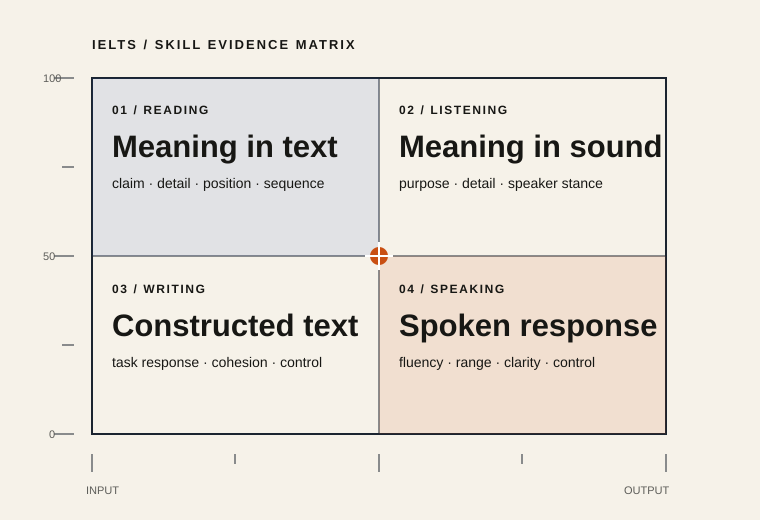

LESSON / 02IELTS Preparation (B2)
IELTS Pilot Cohort
IELTS Pilot Cohort
IELTS Test Structure Overview
A precise view of the four skills, the evidence each task collects, and the instructions that govern a valid response.
3/7
Sections viewed18 min left

One test. Four evidence channels.
IELTS gathers separate evidence from Reading, Listening, Writing and Speaking. Academic and General Training candidates share Listening and Speaking; the Reading and Writing contexts differ.
Why skill bands matter
A separate band for each skill reveals a profile. Strong reading comprehension does not automatically demonstrate control in an extended spoken response.
What IELTS measures
Each task elicits a particular kind of language evidence. Task knowledge supports strategy, but it does not replace the underlying communication skill.
| Reading | Claims, detail, relationships and meaning in context. | Receptive / text |
|---|---|---|
| Listening | Purpose, detail, attitude and development across speech. | Receptive / audio |
| Writing | Task response, organisation, vocabulary and grammar. | Productive / text |
| Speaking | Fluency, flexible language, grammar and intelligibility. | Productive / audio |
Study the structure, then practise the response.
IELTS structure field guide
DOCUMENT / P02
Four skills, one evidence profile
6 ITEMS
04 / PRACTISE
Read the task before the text
Fixed states. No scoring or storage.
01
✓ Correct / evidence located
The lesson distinguishes four skill bands from the overall band. This is a fixed visual state; no client scoring occurred.
Detailed rationale
The word “only” creates an absolute claim. The source describes separate evidence for all four skills, so the claim conflicts with the text.
02
03
Summary completion with a shared word bank
Choose one word for each gap. Options may be used once.
- detail
- purpose
- decoration
- evidence
- speed
IELTS tasks collect about ability. Instructions clarify the task .
04
Inline dropdown completion
Listening and Speaking are for Academic and General Training candidates.
05
The four skills contribute to an overall band ______.
Maximum two words. Spelling matters in scored practice.
06
Match each skill to its main evidence.
RESULT / 3 of 5 automatically reviewed
Fixed presentation evidence; no result was computed.
Diagnostic explanation
Instruction words define source, response length and reuse. On retry, classify those constraints before locating evidence.